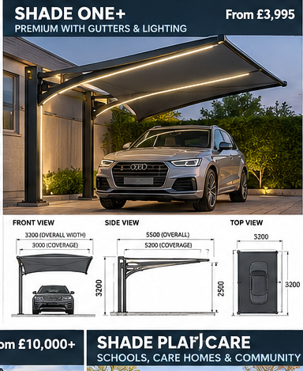
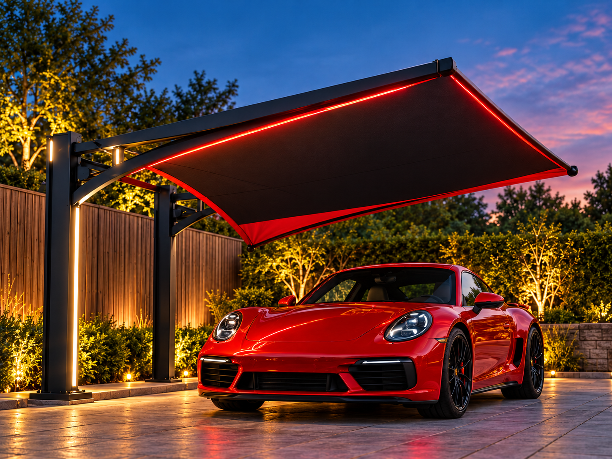
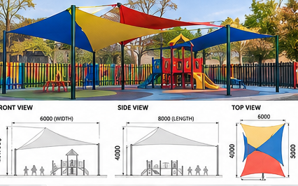
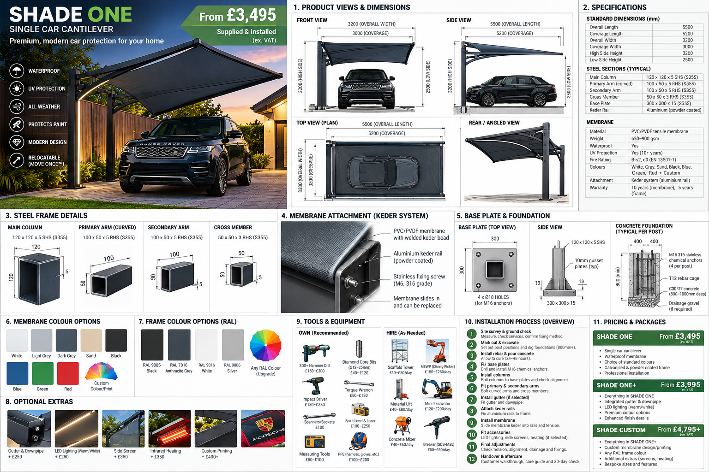

UV exposure
Reduce direct solar exposure to paint, trim and interiors.
Modern architectural canopies for homes, performance cars and commercial sites. Waterproof options, replaceable membranes and clean cantilever designs built around your property.

Protection from the things that actually affect vehicles and driveways in Britain.
Reduce direct solar exposure to paint, trim and interiors.
Cover from rain, bird mess, tree sap, pollen and falling debris.
Less scraping and clearing before an early start.
Powder-coated steel, clean lines and finishes chosen around the property.
Residential protection through to multi-bay commercial and people-shade installations.

Integrated drainage, lighting provision and premium finishing.
From £3,995View SHADE ONE+
Scalable multi-bay systems for dealerships, offices and VIP parking.
Project pricedView FLEET
Outdoor weather cover for schools, care and community settings.
Project pricedView PLAY / CAREOur development concept combines a galvanised and powder-coated steel frame with an architectural tensile membrane and replaceable keder-style attachment. Final structural members, connections, anchors and foundations are determined by engineering for the product and site.

Initial site and design consultation for qualifying projects in the launch area.
Qualifying systems can include one relocation labour allowance within the promotional period; new foundations, engineering and abnormal access remain chargeable.
Early installations receive a visible fixings, membrane and drainage condition recheck.
Optional annual cleaning, drainage service and visible condition inspection.
Choose the system, finish and upgrades, then send your postcode and site details for survey.
Get my indicative price